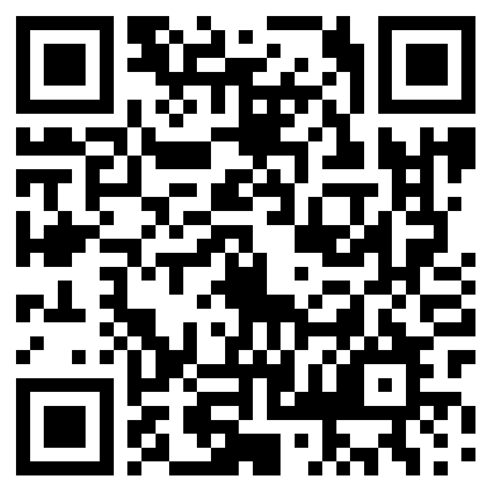

Dosely
Υπενθύμιση φαρμάκων που διαβάζεται εύκολα, με ειδοποίηση συγγενή αν ξεχαστεί μια δόση.

Σκανάρετε με το κινητό ή πατήστε το κουμπί.
Κατέβασμα στο Google Play- Μεγάλα γράμματα και μεγάλα κουμπιά, εύκολα για όλους.
- «Το πήρα» απευθείας από την ειδοποίηση. Δεύτερη υπενθύμιση αν ξεχαστεί.
- Ειδοποίηση συγγενή αν δεν επιβεβαιωθεί η δόση (προαιρετικό): 14 ημέρες δωρεάν, μετά οικογενειακό πακέτο (μηνιαίο ή μία φορά για πάντα). Μία αγορά καλύπτει όλους τους συγγενείς.
- Ο ασθενής χρησιμοποιεί την εφαρμογή πάντα δωρεάν, χωρίς διαφημίσεις και χωρίς λογαριασμό.
- Τα φάρμακά σας μένουν στο κινητό σας. Οι υπενθυμίσεις δουλεύουν και χωρίς internet.
- 19 γλώσσες.
Το Dosely είναι μόνο υπενθύμιση. Δεν δίνει ιατρικές συμβουλές και δεν αντικαθιστά τον γιατρό ή τον φαρμακοποιό σας. Οι ειδοποιήσεις μπορεί να καθυστερήσουν ανάλογα με τις ρυθμίσεις του κινητού.
Dosely – Medication reminder
Large-text medication reminders with an alert to a family member if a dose is not confirmed. Free for the patient, no ads, no account. Reminders work offline. Relative alerts: 14 days free, then a family plan (monthly or once, for ever).